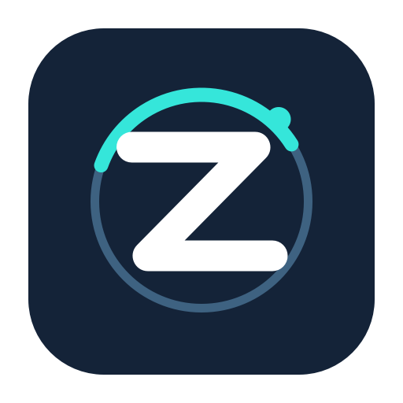

MAKE SEARCHABLE
SELECT THE WORDS
RIGHT IN THE IMAGE.
01 / READ
Text you can actually use.
Recognize text in images and PDFs on your Mac. Select letters, search, copy, or save a separate searchable PDF.

ZeroClick DownloadMade for your Mac. Made to stay local.
Convert, edit, search, protect, and upscale files from one contextual wheel. ZeroClick works where your files already are: on your Mac.
Apple silicon · macOS 26+ · Free and open source
Hold Shift while dragging a file in Finder.
Illustration only. This page never processes your files.
One wheel. A lot of possibilities.
Open a focused window when an action needs choices. Save a new copy when you are done.
SELECT THE WORDS
RIGHT IN THE IMAGE.
Recognize text in images and PDFs on your Mac. Select letters, search, copy, or save a separate searchable PDF.
Review suggested areas, adjust each layer, then export a redacted copy. Solid cover is there for sensitive text.
Choose a model, preview the result, and upscale one image or a batch. Output limits help keep your Mac responsive.
The flow
Pick up a file in Finder. You can also open a file from ZeroClick’s menu-bar picker.
Hold Shift, Shift+Option, Command, or Option to see the corresponding wheel.
Choose an available action. ZeroClick writes a new copy with a collision-safe name.
Private by design
Processing happens locally. No account, no cloud processing, no telemetry. The AI wheel is visible but disabled—marked “Coming later.”
Explore the full feature listReady when you are
Download the standalone macOS app. No Xcode or Git clone required.
Download ZeroClick.app Apple silicon · macOS 26+ · Ad-hoc signed; macOS may ask you to approve the first launch in Privacy & Security.